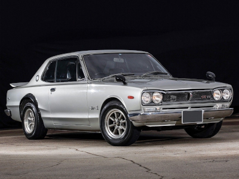

História
Após o fim da Segunda Guerra Mundial, a empresa Tachikawa Aircraft mudava seu nome para Fuji Precision Industries e depois,
em homenagem ao príncipe japonês Akihito, para Prince Motor Company.
Em 1957, surgia o carro de nome Prince Skyline, bem longe de ser o esportivo de hoje,
mas um sedã de luxo para a época. Mas o conceito Skyline teve sua pré-história aí.
Quando o governo japonês decidiu que as empresas automotivas precisariam ser maiores
para garantir o sucesso e a expansão no mercado estrangeiro, as fusões de marca e empresa aconteceram
e então a Prince Motor Company veio a se fundir com a Nissan, e o Skyline teve sua evolução continuada.
Em 1973 a sigla GT-R (Gran Turismo Racing) surgiu depois de uma vitória da Nissan com o 2000 GT-B S54 e
em 1969 no Tokyo Motor Show surge o Nissan GT-R como a primeira versão de alto desempenho do Skyline,
com o motor DOHC capaz de entregar 160 cv de potência, mas só foi introduzido no mercado em 1971.

Em 1973 o modelo GT-R deixou de ser produzido mas 16 anos depois a Nissan traz a sigla GT-R de volta
com o modelo Nissan Skyline GT-R R32 com o motor RB26DETT de 6 cilindros em linha biturbo e tração AWD e um motor de 280 cv.
A geração R32, também chamada de Godzilla, foi até 1994, ano em que foi substituída pelo R33. Em 1998 o R33 foi substituído pelo R34,
o mais perfeito GT-R devido a potencia do R33 e tamanho reduzido próximo ao R32.
O Nissan Skyline GT-R R34 foi a versão considerada dominante, sendo produzida de 1999 à 2002.
Nesse período, a versão base teve atualizações tecnológicas que tornaram o Godzilla mais agressivo
e também mais caro. A princípio o motor twin turbo com 6 cilindros em linha entregava 276 cavalos de potência
com AWD full-time. Um display multifuncional em LCD exibia as informações do motor bem a frente do motorista.
Em 2007 a Nissan divulgou o lançamento de um novo modelo GT-R em dezembro
após o Tokyo Motor Show, com o motor VR38DETT 3.8 de 6 cilindros em V e biturbo com 600 HP.
Ouça o som do motor RB26 do Nissan Skyline